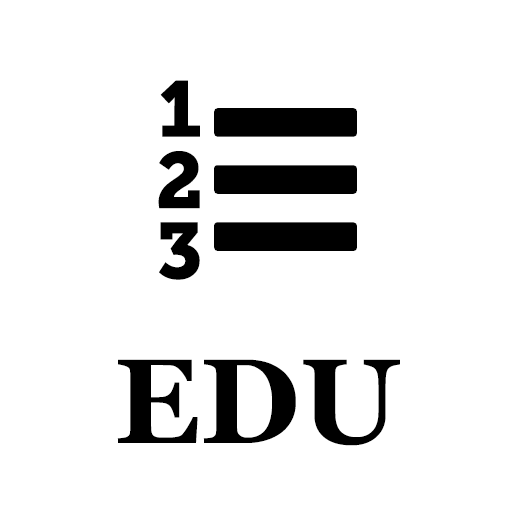
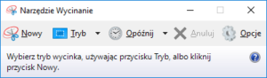
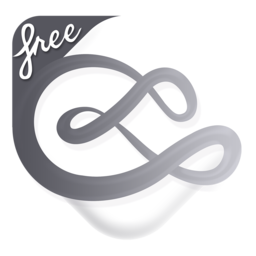
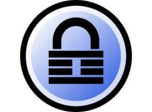

Post archive
Rzeczy codziennego użytkowania

Listy EDC zalewają Internet, postanowiłem zrobić własną listę rzeczy, z których korzystam prawie codziennie w pracy, jak i w domu.
Wymiana zdjęć
Jednym niezastąpionym sposobem wymiany informacji jest wysyłanie zdjęć ekranu. Niestety uciążliwe jest używanie klawisza PrintScreen, wklejanie zawartości do programu Paint zapisywanie i wysyłanie informacji, która nas interesuje do adresata. Z pomocą przychodzi program znajdujący się w Systemie Windows nazywający się Narzędzie wycinanie{kind=link}

Program pozwala nam na wycięcie dowolnego fragmentu ekranu, zaznaczenie interesujących nas rzeczy i wysłanie ich do odbiorcy bez konieczności zapisywania. Wszystko przechowywane jest w schowku w celu wysłania przetworzonego zdjęcia wystarczy w polu komunikatora nacisnąć Ctrl + V.Szkicowanie
{kind=link}

Każdy wie, że najlepszym przyjacielem programisty jest długopis i kartka papieru. Niestety w przypadku komunikacji przez Internet kartka papieru i długopis nie zdadzą się na dużo, dlatego potrzebna jest komputerowa kartka papieru, w tym celu wykorzystuje program nazywający się Mischef-Free. Jest to prosty program graficzny posiadający nieskończone pole do rysowania. Dzięki temu nie jesteśmy ograniczeni do rozmiarów kartki, jaką ustawiliśmy na samym początku rysowania. Do tego oczywiście potrzebujemy długopis. Rysowanie za pomocą myszki nie jest najwygodniejszym rozwiązaniem, chociaż z upływem lat doszedłem do wprawy i nawet mi to wychodzi. Tak czy siak, w miejsce długopisu przychodzi tablet graficzny. Wielkość tabletu ma spore znaczenie, wiadomo im większy, tym lepszy. Na studiach ze znajomymi wykorzystywaliśmy jeszcze podobne rozwiązanie do Mischef, różni się tym, że jest to aplikacja znajdująca się w przeglądarce. Pozwalało to na rysowanie jednocześnie w kilka osób. Aplikacje można znaleźć pod adresem idroo.com.Zarządzanie czasem
Zarządzanie czasem to jedno z ważniejszych zadań każdej osoby, jedni wolą notesy papierowe inni kalendarze w telefonie, ja wolę widget znajdujący się na pulpicie mojego komputera. Z pomocą przychodzi iCalendar lite. Aplikacja pełni rolę kalendarza, listy rzeczy do zrobienia oraz przypominacza. Posiada również możliwość synchronizacji z kalendarzem od Google. Według mnie jest to aplikacją, która powinna się znaleźć na pulpicie każdego.{kind=link}
Bezpieczeństwo
{kind=link}

Włamano mi się kilka razy na moje konta. Nie mam kogo winić w tym przypadku, korzystałem z mojego prostego hasła i jak każda osoba używałem go wszędzie. Kiedy wyciekła baza danych z jakiegoś portalu wszystkie hasła zostały udostępnione. I zakładam, że właśnie w taki sposób jakaś osoba weszła w posiadanie mojego hasła i adresu e-mail. Dlatego nie powinno się używać takich samych haseł wszędzie. Z pomocą przychodzi aplikacja Keepass, która pozwala nam na zarządzanie oraz generowanie hasłami. Dzięki temu, nawet jeżeli hasło pojawi się gdzieś w sieci, to jest jednorazowe i nikt z nim nic nie zrobi.